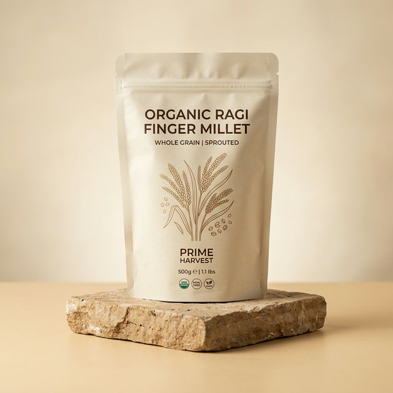

Our Collection

Foxtail Millet (Korralu)
High Iron, Low GI, Rich Fiber
₹189 / 500g
Pearl Millet (Bajra)
High Protein, Calcium, Zinc
₹149 / 500g
Finger Millet (Ragi)
Highest Calcium, Vitamin D, Gluten Free
₹169 / 500g
Kodo Millet (Varagu)
Antioxidants, Low Glycemic, Weight Mgmt
₹199 / 500g
Little Millet (Samai)
Magnesium, B Vitamins, Detox
₹179 / 500g
Barnyard Millet (Udalu)
High Fiber, Iron, Fasting-friendly
₹189 / 500g
Sorghum Flour (Jowar)
Protein, Antioxidants, Versatile
₹149 / 500g
Millet Starter Kit
All 4 varieties sampler pack, gift-ready
₹799 / 4x500g
The Nutritional Advantage
See how our organic millets compare to standard white rice (per 100g).
| Grain Type | Protein (g) | Fiber (g) | Calcium (mg) | Iron (mg) | GI Index |
|---|---|---|---|---|---|
| White Rice (Refined) | 6.8 | 0.2 | 10 | 0.7 | 73 (High) |
| Foxtail Millet | 12.3 | 8.0 | 31 | 2.8 | 54 (Low) |
| Pearl Millet (Bajra) | 11.6 | 11.0 | 42 | 8.0 | 54 (Low) |
| Finger Millet (Ragi) | 7.3 | 3.6 | 344 | 3.9 | 54 (Low) |
| Kodo Millet | 8.3 | 9.0 | 27 | 0.5 | 52 (Low) |
Common Questions
Yes, we highly recommend soaking whole millets for 4-6 hours before cooking. This neutralizes phytic acid, makes them easier to digest, and ensures a fluffy texture.
Yes, all our millets are 100% naturally gluten-free. We process them in a dedicated facility to ensure there is no cross-contamination with wheat or barley.
Store your millets in an airtight container in a cool, dry place. Because our products are completely organic and unpolished, they are best consumed within 6 months of the milling date.
Foxtail and Kodo millets are exceptionally good for blood sugar management due to their high fiber content and low Glycemic Index (GI). However, all millets perform significantly better than white rice.
Yes, but because millets lack gluten (the binder), you cannot do a 1:1 substitution for breads. We recommend using a 30% millet to 70% wheat ratio initially, or using binding agents like psyllium husk or hot water for pure millet rotis (bhakri).
The majority of a grain's fiber, vitamins, and minerals are stored in the outer bran layer. Polishing removes this layer entirely. Our millets are minimally processed to retain full nutritional value.